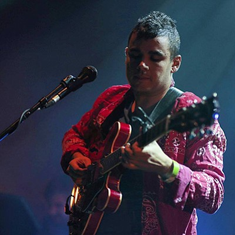

Vampire Weekend is an American rock band from New York City, formed in 2006 and currently signed to Columbia Records. The band was formed by lead vocalist and guitarist Ezra Koenig, multi-instrumentalist Rostam Batmanglij, drummer Chris Tomson, and bassist Chris Baio. The band's first album Vampire Weekend (2008)—which included the singles "Mansard Roof", "A-Punk", "Oxford Comma", "Cape Cod Kwassa Kwassa", and "The Kids Don't Stand a Chance"—was acclaimed by critics for its world music influences. Their following album, Contra (2010), was similarly acclaimed and garnered strong commercial success. Their third studio album, Modern Vampires of the City (2013), won the group a Grammy Award for Best Alternative Music Album in 2014. Batmanglij departed the group in 2016. Currently, the band is working on their fourth studio album.
Formation and early years (2006–2007):
The band members met while enrolled at Columbia University, beginning with a rap collaboration between Koenig and Tomson named "L'Homme Run". They bonded over a shared love of punk rock and African music. Koenig toured with The Dirty Projectors during a period of experimentation with African music, inspiring the band to incorporate world sounds into their earliest work. The band chose the name "Vampire Weekend" from the title of a short film project Koenig worked on during the summer between freshman and sophomore years in college. While home for the summer, Koenig watched a 1980s vampire film (The Lost Boys) and was inspired to make a Northeastern version of the film in which a man named Walcott travels to Cape Cod to warn the mayor that vampires are attacking the United States.[6] Koenig abandoned the project after two days. The band began playing shows around Columbia University, starting with a battle of the bands at Lerner Hall in 2006. After graduating from college, the band self-produced their debut album while simultaneously working full-time jobs, Tomson as a music archivist and Koenig as a middle school English teacher.
Vampire Weekend in 2007:
In 2007, Vampire Weekend's song "Cape Cod Kwassa Kwassa" was ranked 67th on Rolling Stone's list of the "100 Best Songs of the Year." In November 2007, they toured the UK with The Shins.[12] The then-nascent influence of blog hype and internet buzz played a role in their success and led to a large prerelease following sufficient to support them performing on three tours before their debut album was released. They were declared "The Year's Best New Band" by Spin magazine in the March 2008 issue, and were the first band to be shot for the cover of the magazine before releasing their debut album. The band made a television appearance on The Late Show with David Letterman on February 1, 2008, and on March 8, 2008, performed on Saturday Night Live. Four songs from the band's first album also made the Triple J Hottest 100, 2008. The internet hype had its backlash, however, as critics reacted against a perceived image of Vampire Weekend as privileged, upper-class Ivy League graduates stealing from foreign musicians. One critic went so far as to call Vampire Weekend the "whitest band in the world," to which they took exception, given their Ukrainian, Persian, Italian and Hungarian heritages. Koenig responded in a November 2009 interview by saying, "Nobody in our band is a WASP." Furthermore, the backlash involving their social backgrounds was largely unfounded, as Koenig explained in the interview that the band members got into Columbia on scholarship and used student loans; he himself was still paying off student loans in 2009.
Vampire Weekend (2007–2009):
The band's first album Vampire Weekend was released January 29, 2008. A success in the US and UK, it peaked at number 15 on the UK Albums Chart and number 17 on the Billboard 200. Four singles were released from the album; while "A-Punk" peaked at number 25 on the Billboard Modern rock chart and number 55 on the UK Singles Chart, "Oxford Comma" peaked at number 38 in the UK. "A-Punk" was ranked the 4th on Rolling Stone's Readers' Rock List: Best Songs of 2008. "A-Punk" was also used to open the Will Ferrell/John C. Reilly feature Step Brothers, and featured in the UK television show The Inbetweeners and the video games Guitar Hero 5, Just Dance 2 and Lego Rock Band.
Contra (2009–2011):
The band's second album, Contra, was released on January 11, 2010 in the UK and the following day in the US, after being pushed back from the original release date for the fall of 2009.[21] The album's first single, "Horchata", was released on October 5, 2009. The album's second single, "Cousins", was released as a single on November 17, 2009. Initial copies of the CD and LP sold at independent records stores in the US include a 3-track bonus CD containing two "melts", which featured bits of album tracks and a remix. Contra was the band's first album to debut at No. 1 on the Billboard 200.
On January 9, 2010, the band did an acoustic show for MTV Unplugged. The following month, the band toured Europe and Canada with Canadian electro duo Fan Death as their support. The video for their next single "Giving Up the Gun" was also released on February 18, 2010 which included cameos from Joe Jonas, Lil Jon, RZA and Jake Gyllenhaal.
They also played festivals across the USA such as Coachella, Bonnaroo, Austin City Limits Music Festival, All Points West and the Groovin' The Moo festival in Australia. Their third single, "Holiday", was released on June 7, 2010.
On June 25, 2010, the band played the Pyramid Stage at Glastonbury Festival, in Pilton, Somerset, UK. The band were also on the main stage at T in the Park 2010 at Balado Kinross, Scotland, on June 8, and played the Oxegen Festival in Ireland on July 9. They also headlined the Latitude Festival in Suffolk, UK on July 18. On 16 July the band headlined the Main Stage at the Festival Internacional de Benicàssim. In the summer of 2010 the band played at the Utopia stage on Peace and Love, Sweden's biggest Festival. On July 30, 2010, the band played at Jisan Valley Rock Festival in South Korea.
In 2010, Vampire Weekend embarked on a North American tour with Beach House and Dum Dum Girls. The tour started off on August 27, 2010, in Vancouver, British Columbia at the Malkin Bowl. Koenig mentioned to the audience that before this concert, the band had the longest "vacation period" that they have had in a while.
Contra was nominated for a Grammy for Best Alternative Music Album, but lost to The Black Keys's Brothers.
Modern Vampires of the City (2011–2014):
On November 11, 2011, it was revealed that Vampire Weekend had been in the studio, writing and recording material for their third album. On April 26, 2012, Rolling Stone reported that the new album could be released by the end of the year. Koenig said, "We do have a ton of stuff. It would be cool if it was [released] this year...We just never want to be in a position [where] when we put out something, we feel could've benefited from more time." Until its release, the band was discreet about the details of the next album, stating that a band "can give a bunch of interviews when they're working on stuff" but they "don't want something [they] said six months ago to influence how people hear it when it's done."
Modern Vampires of the City was released in May 2013, and written and recorded in various locations including SlowDeath Studios in New York, Echo Park "Back House" in Los Angeles, Vox Recording Studios in Hollywood, Rostam Batmanglij's New York apartment and a guest house on Martha's Vineyard. The album was co-produced by Batmanglij and Ariel Rechtshaid. After Batmanglij produced the first two albums himself, this marked the first time the band worked with an outside producer on any of their records.
In an interview for the February 2013 edition of Q (released in mid-January), Koenig described the upcoming album as "darker and more organic" and "very much the last of a trilogy". Says Koenig, "Things that we might have found boring in the past, we've started to find more fresh. This album has more piano and acoustic guitar and organ." Modern Vampires of the City also marks the band's first use of digital voice modulation, as heard in the songs "Diane Young" and "Ya Hey." (first use was actually in the song "California English" on the Contra album). The album was recorded and co-produced by Ariel Rechtshaid in his Los Angeles Studio (alongside Batmanglij). The band discussed the album with The FADER and appeared on the cover of the magazine's 84th issue. On March 16, 2013, the band played the closing show at Stubbs on the last day of the SXSW festival in Austin, Texas. In the show they played two new songs from the upcoming album: "Diane Young" and "Ya Hey". On March 18, 2013, Vampire Weekend released a double-sided single, "Diane Young"/"Step". On May 11, 2013, Vampire Weekend were featured as the musical guest on Saturday Night Live with Kristen Wiig hosting, their third time on the show.
Released on May 14, 2013, the album debuted at #1 on the Billboard chart, marking the second time Vampire Weekend has achieved the feat: its second album Contra also debuted at #1 in 2010, making them the first independent rock band to enter the charts at #1 with two consecutive releases. Modern Vampires of the City also shattered the previous record for first week vinyl sales, moving nearly 10,000 units on vinyl alone and debuting at #1 on the Soundscan Vinyl Charts. Additionally, the band charted #1 at Indie, Alternative, Digital and the top 200. In 2014, Modern Vampires of the City won a Grammy for Best Alternative Music Album.
Departure of Batmanglij, Columbia Records and LP4 (2014–present):
After remaining quiet following the conclusion of their Modern Vampires tour, on January 26, 2016, Rostam Batmanglij announced his departure from the band on Twitter. He noted that he and Koenig would continue to collaborate. Later the same day, Koenig announced that Vampire Weekend was in the studio working on their upcoming fourth album, with Batmanglij contributing to the record. The album's working title was revealed to be Mitsubishi Macchiato.
In April 2016, the band briefly performed at a rally for presidential candidate Bernie Sanders in Washington Park Square. Koenig has been a well-known supporter of Sanders, after discussions on his Beats 1 radio show, Time Crisis. The band performed live with Dave Longstreth of the Dirty Projectors, which marked their first performance as a trio.
In late 2016, Koenig was reportedly in talks to sign the band with Columbia Records, as he reportedly "hit it off" with executive, Rob Stringer. Initially, this news was regarded a rumour, until the band's website revamp in 2018, in which a Sony Music copyright appeared on the site.
In March 2017, Koenig revealed in an elaborate Instragram update that during 2016 he had spent countless hours researching and writing music in libraries with grad students. Additionally, he revealed that the album, given the working title of "Mitsubishi Macchiato", would feature a more 'spring-time' vibe and one of the songs would be entitled Flower Moon. Koenig revealed that LP4 would be partially inspired by the songwriting of country singer, Kacey Musgraves, after he attended one of her shows in September 2016. In an interview with Stereogum, he stated, "I’m the type of person who has spent hours poring over the avant-garde poetic lyrics of certain songwriters, and there was something that felt so good [about how] from the first verse, you knew who was singing, who they were singing to, what kind of situation they were in. After the show I realized there’s not a ton of Vampire Weekend songs where you could listen to the first verse and immediately answer the question of who’s singing and who are they singing to.” Furthermore, in a September 2017 interview with Zane Lowe, Ezra briefly spoke about LP4 and stated that it was "about 80% done." He mentioned that the album would feature lead producer, Ariel Rechtshaid, with additional "guest appearances", one of which being Batmanglij. Lowe pushed Koenig for a release date, sighting Q1 2018 as a likely candidate. In a December 2017 interview, Koenig noted that Batmanglij was involved in a few songs, some of which was material that they had started working on long ago, and that their method of collaboration had not changed despite the latter's departure from the band.
Vampire Weekend's first gigs since the hiatus took place in Ojai, California on June 16 & 17. On January 31, 2018, it was announced that the band would be headlining the UK music festival End of the Road.[44] The festival will run from August 31 to September 3 and marks Vampire Weekend's first return to a festival stage in 4 years.[45] On July 21, they will be performing in Byron Bay for the Australian festival, Splendour in the Grass.[46] Additionally, it was announced that they would headline the 2018 Fuji Rock Festival, scheduled for July 27 to 29.[47] The band will also be performing at Lollapalooza 2018, which runs from August 2–5, 2018. For their live shows, the core trio of Koenig, Baio and Tomson has been augmented by Greta Morgan on keyboards, guitar and vocals, Brian Robert Jones on guitar,[49] Garrett Ray on percussion, drums and vocals, and Will Canzoneri on keyboards and vocals.
During their August 4 performance at Lollapalooza, where the band played fan favorite "A-Punk" three times in a row, Koenig announced that Vampire Weekend's 4th album was done.
Other contributions:
Vampire Weekend contributed a cover of "Exit Music (For a Film)" for Stereogum Presents... OKX: A Tribute to OK Computer (2007), a free tribute album celebrating 10 years of Radiohead's album OK Computer. They have also covered "Everywhere" by Fleetwood Mac, "Ça Plane Pour Moi" by Plastic Bertrand, "I'm Goin' Down" by Bruce Springsteen, "Have I the Right?" by The Honeycombs, "Blurred Lines" by Robin Thicke, "Fight For This Love" by Cheryl Cole and "Ruby Soho" by Rancid.
The band also contributed the song "Ottoman" to the soundtrack to the 2008 film Nick and Norah's Infinite Playlist. Ottoman was then sampled by alternative hip-hop artist Kid Cudi. Two tracks from their debut record also appeared in the 2009 comedy I Love You, Man. A new song, "Jonathan Low", was released on June 8, 2010, appearing on the soundtrack to the third installment of the Twilight Saga films, Eclipse.
The song "Worship You" was featured in the soundtrack for the 2013 EA Sports video game FIFA 14.
In 2014, Vampire Weekend contributed a cover of "Con te Partiro" by Andrea Bocelli on the Valentine's Day compilation, Sweetheart 2014. Vampire Weekend also contributed a cover of Bruce Springsteen's "I'm Goin' Down" on the Girls Vol. 2 Soundtrack.
In 2018, the band's songs "'M79", "The Kids Don't Stand a Chance" and "Cousins" were featured in the family film adaption Peter Rabbit. Koenig also wrote the original track, "I Promise You" for the film.
ABOUT THE MEMBERS
Ezra Koenig (2006 - present)
Lead Vocals, guitar, piano
Ezra (born April 8, 1984) is an American internet radio host, musician, singer-songwriter, and playwright. He is best known as the lead vocalist and guitarist of alternative rock band Vampire Weekend. Additionally, Koenig is the creator of the Netflix animated comedy series Neo Yokio and also hosts the Apple Music radio talk show Time Crisis.
Extra space

Chris Baio (2006 - present)
Bass, backing vocals
Chris (born October 29, 1984) is an American musician, best known for being the bassist for the New York City-based indie rock band Vampire Weekend. He also releases as a record producer under the mononym Baio, and his debut solo album The Names was released through Glassnote Records on 18 September 2015.
Extra space
Extra space

Christopher "Chris" Tomson (2006 - present)
Drums, percussion, backing vocals
Chris (born March 6, 1984) is an American drummer, singer, songwriter and multi-instrumentalist, best known for being the drummer for New York-based indie rock band Vampire Weekend. He is also the lead vocalist and guitarist for a side project called Dams of the West, for which he writes and records the entirety of its music.
Extra space

Rostam Batmanglij (2006 - 2016)
Keyboards, guitar, percussion, backing vocals, record production
Rostam (born November 28, 1983) known mononymously as Rostam, is an Iranian-American songwriter, composer, producer and multi-instrumentalist of electro-soul group Discovery, and formerly of New York City-based indie rock band Vampire Weekend.
Extra space
Extra space